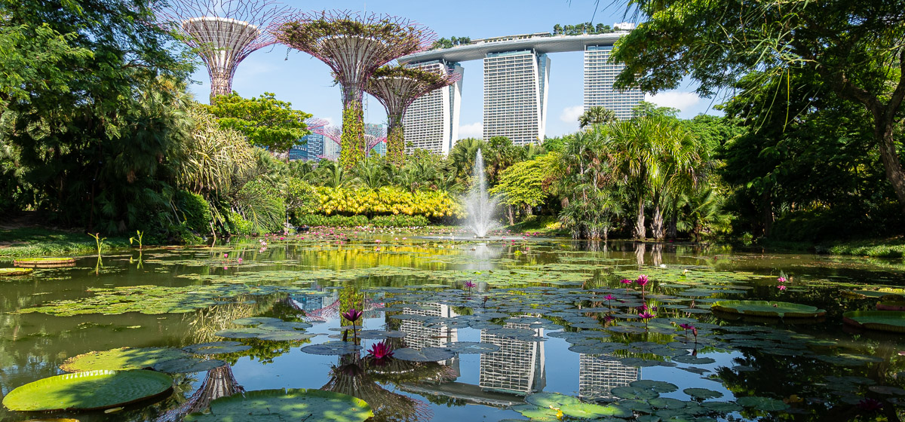

Marina Bay Sands
A Marina Bay Sands Szingapúr egyik legismertebb épülete és turisztikai látványossága. 2010-ben nyílt meg, és három hatalmas szállodatoronyból áll, amelyeket a tetejükön a Sands SkyPark köt össze. A SkyPark körülbelül 200 méter magasan található, és panorámás kilátást nyújt Szingapúrra. A tetején található a híres, 150 méter hosszú Infinity Pool, amely kizárólag a szálloda vendégei számára használható.
